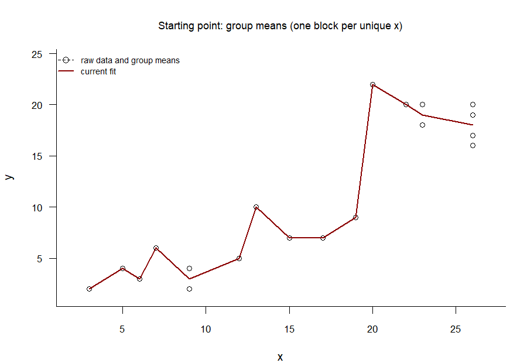
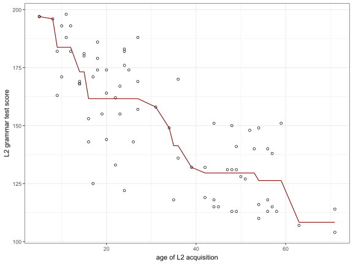

Sometimes, when fitting a trend line to a cloud of data points, you just know that the line has to go up. It may not be a straight line, it may not be a smooth line, it may not even be a continuous line, but onwards and upwards it must go. This blog post briefly introduces isotonic regression, which is a technique for fitting such trend lines, and provides a few easy-to-use R function for adding isotonic regression lines to scatterplots.
Least-squares isotonic regression
Figure 1 shows a scatterplot with some made-up data. We often want to add a trend line to such scatterplots in order to better appreciate the relationship between the \(x\) and \(y\) variables. These trend lines are typically drawn so as to be optimal in some sense. A common optimality criterion is that the trend line should show the graph of a function \(f : \mathbb{R} \to \mathbb{R}\) that minimises the residual sum of squares when applied to the data. That is, given observations \((x_1, y_1), \dots, (x_N, y_N)\), we want our function \(f\) to minimise the quantity \[\sum_{i = 1}^N (y_i - f(x_i))^2.\]
Figure 1: A scatterplot to which we want to add a trend line.
This criterion alone doesn’t usefully constrain the form of the trend line, however. The trend line shown in Figure 2 illustrates the problem. At each observed \(x\) value, the function value \(f(x)\) is the mean of the \(y\) values at this \(x\) value; between the observed \(x\) values, the fitted values are linearly interpolated. It is one of the best-fitting least-squares trend lines, but it likely suffers from substantial overfitting.
Figure 2: This trend line minimises the residual sum of squares
To obtain more useful trend lines, the form of \(f\) needs to be constrained in some way. In simple ordinary least-squares linear regression, the constraint is that that \(f\) should be an affine function. That is, only functions that satisfy \[f(x) = \alpha + \beta x\] for some numbers \(\alpha\) and \(\beta\) and for all \(x\) are considered. If there are at least two distinct \(x\) values, the least-squares optimality criterion guarantees that there is a single optimal function \(f\), the graph of which is a straight line through the cloud of data; see Figure 3.
Figure 3: The best-fitting least-squares linear regression line
While it’s clear that \(y\) tends to have larger values as \(x\) increases, it’s not so clear that this relationship is best captured by a straight line. Indeed, the straight line tends to underfit the \(y\) values corresponding to the smallest \(x\) values, and there seems to be a jump in the \((x, y)\) relationship around \(x = 20\) that the linear fit glosses over.
In isotonic regression, it is no longer assumed that the trend line has to be straight. Instead, the constraint imposed on the form of the function \(f\) is that \(f\) should be isotonic. This is synonymous to \(f\) being monotonically non-decreasing: if \(x_i \leq x_j\), then we require \(f(x_i) \leq f(x_j)\). A best-fitting function \(f\) satisfying this constraint can be found by means of the pool adjacent violators algorithm (PAVA).
The GIF in Figure 4 shows the PAVA at work.1 The algorithm works as follows.
Start from the unconstrained best least-squares fit in Figure 2. That is, connect the \(y\) means at each value of \(x\).
Identify the first segment where the trend line decreases.
Compute the mean of the \(y\) values belonging to this offending segment (i.e., pool the adjacent violators) and replace the trend line value with this pooled mean.
Stop if there are no further decreasing segments; otherwise go back to step 2.

Figure 4: The pool adjacent violators algorithm at work: The decreasing segments in the best-fitting line are ironed out one at a time until the trend line is entirely non-decreasing.
Technically, the PAVA only computes the \(f(x_i)\) values at the observed \(x_i\) values. In Figure 4, I connected these \(f(x_i)\) values using linear interpolation (i.e., with straight lines), but this isn’t necessary: as long as you connect them in monotonically non-decreasing way, the function \(f\) you end with is an optimal (in the least-squares sense) isotonic fit.
R code
PAVA
The next code snippet defines the function pava() that takes x and y vectors of equal length and outputs the least-squares isotonic fit values at the unique values of x. If the parameter plot is set to TRUE, a scatterplot with the fitted isotonic trend line is generated. If the parameter antitonic is set to TRUE, an antitonic (i.e., monotonically non-increasing) trend line is computed instead.
Code
pava <-function(x, y, plot =TRUE, antitonic =FALSE) {if (antitonic) y <--y y <- y[order(x)] y_all <- y x <-sort(x) y <-tapply(y, x, mean) w <-tapply(x, x, length) m <-length(y) k <-0 b <-0 s <-integer(m) g <-numeric(m) v <-numeric(m)while (k < m) { k <- k +1 vnew <- w[k] Gnew <- w[k] * y[k]while (k < m && y[k +1] <= y[k]) { k <- k +1 vnew <- vnew + w[k] Gnew <- Gnew + w[k] * y[k] } b <- b +1 s[b] <- k g[b] <- Gnew / vnew v[b] <- vnewwhile (b >1&& g[b] <= g[b -1]) { s[b -1] <- k vtemp <- v[b -1] + v[b] g[b -1] <- (v[b -1] * g[b -1] + v[b] * g[b]) / vtemp v[b -1] <- vtemp b <- b -1 } } f <-numeric(m) start <-1for (a in1:b) { end <- s[a] f[start:end] <- g[a] start <- end +1 }if (antitonic) { y_all <--y_all f <--f }if (plot) {plot(x, y_all, xlab ="x", ylab ="y", las =1)lines(unique(x), f, col ="blue") }list(x_vals =unique(x),y_fit = f )}
The function iso_predict() defined below can be used to compute the location of the trend line at new values of \(x\), as long as these are within the range of the observed \(x\) values.
The next code snippet defines a ggplot geom called geom_pava() with which you can add isotonic (and antitonic) trend lines to scatterplots drawn with ggplot2. You also need the pava() function defined above.
Code
library(ggplot2)
Warning: package 'ggplot2' was built under R version 4.5.3
Figure 5: The isotonic trend line drawn with ggplot2.
Antitonic regression
The PAVA can easily be used to draw non-increasing trend lines. Figure 6 shows some data on the relationship between the start of L2 acquisition and the learners’ performance on an L2 grammar test culled from a study by DeKeyser et al. (2010) with an antitonic trend line added (download data).
Code
read.csv("dekeyser2010.csv") |>ggplot(aes(x = AOA, y = GJT)) +geom_point(shape =1) +geom_pava(decreasing =TRUE, col ="darkred") +xlab("age of L2 acquisition") +ylab("L2 grammar test score") +theme_bw()

Figure 6: The PAVA is easily adapted to non-increasing trend lines. Data from DeKeyser et al. (2010).
Generalisations and R packages
I’ve only given you a quick introduction to least-squares isotonic and antitonic regression for a single predictor \(x\) and a single outcome \(y\) as this is the only flavour of isotonic regression that I’m reasonably familiar with. That said, there exists a considerable literature on generalisations of this technique. These extensions include isotonic quantile regression and allowing for multiple predictors. If you’re interested, you may want to check out the R package isotone (Mair et al. 2025) and its vignette. Further extensions that seem useful include smoothly decreasing or increasing trend lines, as opposed to the jagged trend lines shown in this post. These are implemented in the scam package (Pya 2026).